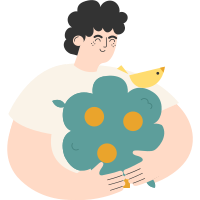

<div class="liberate-adoption-confirmation-popup-container d-flex pt-xl pb-xl pr-xl pl-xl mob-pa-m" id="liberate-adoption-confirmation-popup-block" *transloco="let t">
  <div class="liberate-adoption-confirmation-popup-img mr-xl align-self-center">
    
  </div>

  <div class="liberate-adoption-confirmation-popup-wrapper">
    <div class="liberate-adoption-confirmation-popup-title popup-header-title">{{t('page.cancel-adoption.title')}}</div>

    <div class="liberate-adoption-confirmation-popup-msg t-grey-o t-m-regular mb-m">{{t('global.cancel-adoption-text.body')}}</div>

    <div class="justify-content-end d-flex flex-md-row flex-column">
      <cf-button id="cancel-liberate-adoption-confirmation-btn" class="hide-mobile mr-s" [flat]="true" (click)="onClose()" [width]="'fit'">
        {{t('page.do-not-liberate-adoption.button')}}
      </cf-button>

      <cf-button id="accept-liberate-adoption-confirmation-btn" class="mob-mb-s" [ngClass]="{'w-100': domSrv.getIsDeviceSize()}"
        (click)="confirmAdoptionLiberation()" [width]="domSrv.getIsDeviceSize() ? 'auto' : 'fit'">
        {{t('page.liberate-adoption.button')}}
      </cf-button>

      <cf-button id="cancel-liberate-adoption-confirmation-btn" class="hide-desktop w-100 mr-s" [flat]="true" (click)="onClose()"
        [width]="'auto'">
        {{t('page.do-not-liberate-adoption.button')}}
      </cf-button>
    </div>
  </div>
</div>
